Mooney Lab @ University of Southern California
Welcome! We are the Mooney Lab. Our goal is to use patterns of variation in the genome to understand the evolutionary and population histories of both humans and other species. We do this by implementing and developing computational and statistical methods to study the genome.
We are also interested in broader population genetics questions such as the genomic consequences of deleterious (non-neutral) mutations, where deleterious mutations tend to aggregate in the genome, and understanding patterns of genomic sharing through identity-by-descent segments and runs of homozygosity.
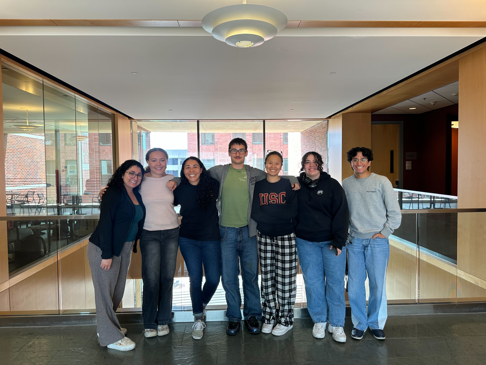
We are located at the University of Southern California (USC) in the Department of Quantitative and Computational Biology (QCB).
Our Research
For the last decade, population genetics has rapidly accelerated to new heights with the availability of sequence data. These data sets have provided valuable insights about population history, phenotypes, disease architecture, evolution, and genomic diversity.
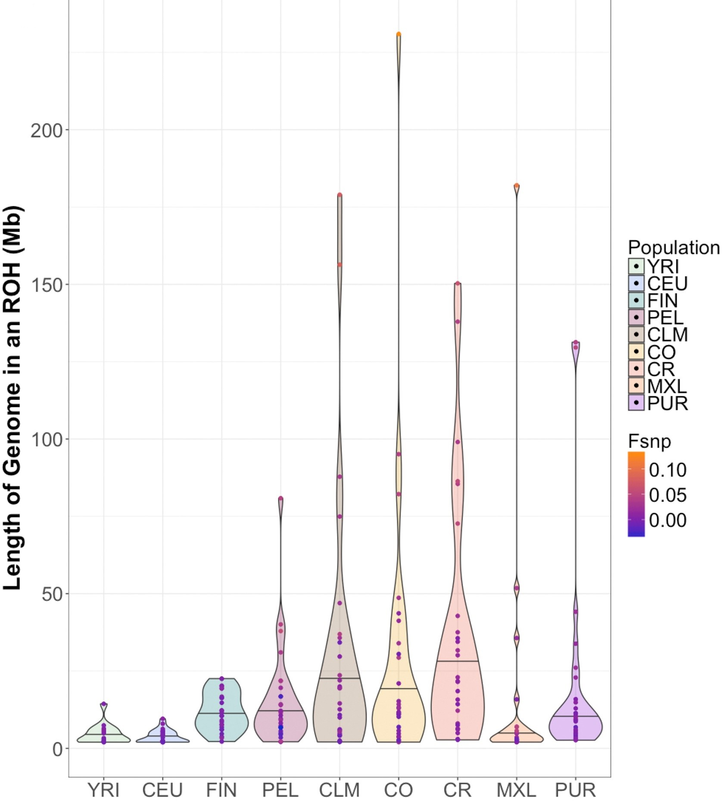
Broadly, our lab uses empirical data analysis, simulation frameworks, and methods development to: (1) infer demography, (2) understand the fitness impact of recessive variation, and (3) investigate complex trait architecture.
We focus primarily on integrating data from both human and non-human populations to develop a more complete picture of mechanisms that shape patterns of genomic sharing (in the form of identity-by-descent segments and runs of homozygosity) and deleterious variation. We are also interested in developing methods for conservation biology, inference of the genealogical histories of admixed populations, and the equitable inclusion of underrepresented populations in genomics.
Jazlyn's talk at CGSI
On-going research in the Mooney Lab on uncovering the history of African Americans.
Join the Mooney Lab
We are glad you are interested in joining us!
We are an inclusive lab. I support my students and believe they all deserve an opportunity to be in computational biology. The Mooney lab is a space where lab members not only learn the science but also are excited about the future of science. There are no required prerequisites for joining the lab and lab members may come from any background. In the Mooney lab, most projects will include coding for genetic data analysis, some mathematics, simulation, and data visualization. Most of all, I want students to learn relevant skills for the next step in their career, in a lab where they feel like science is a place where they can grow and thrive.

Postdoctoral researchers
To inquire about postdoctoral positions, please write to Jazlyn at jazlynmo@usc.edu. Interest areas that would fit particularly well in the lab include the population genetics of runs of homozygosity, identity-by-descent segments, complex traits, and demographic inference.
Please include a CV and a short description (1–2 pages) of your research experience, interests, and ideas for work in the lab. Please put "Postdoc position" in the subject line. Please also list 2–3 professional references and include any recent work you'd like to share.
PhD students
Feel free to contact me — put "Graduate student position" in the subject line of your email to jazlynmo@usc.edu. We can talk about potential research interests and relevant projects in the lab.
Students should apply to USC's Computational Biology and Bioinformatics (CBB) program. Our graduate program will give you experience in algorithms, statistics, and biology. During the first year, students complete coursework and rotate in up to three CBB-affiliated labs. Students interested in completing a PhD in the lab should arrange to do one of their rotations with us. CBB admissions are handled by the admissions committee and not by individual labs.
Undergraduates, Master's students, and others
We are looking to include USC undergraduates and Master's students on research projects. If you are interested, email me with either "Undergraduate student position" or "Master's student position" in the subject line at jazlynmo@usc.edu. Please include a CV, relevant course history, and a statement of interest.
Experience with command line, Python, R, or C/C++ is beneficial but not required.
Contact Us
Email: jazlynmo@usc.edu
We are located on the 4th floor of Ray R. Irani Hall (RRI) at the University of Southern California, in the University Park neighborhood of Los Angeles. The closest parking structure is the Downey Way Structure.
Our Publications
& indicates co-first authorship · + indicates co-corresponding authorship
The Team
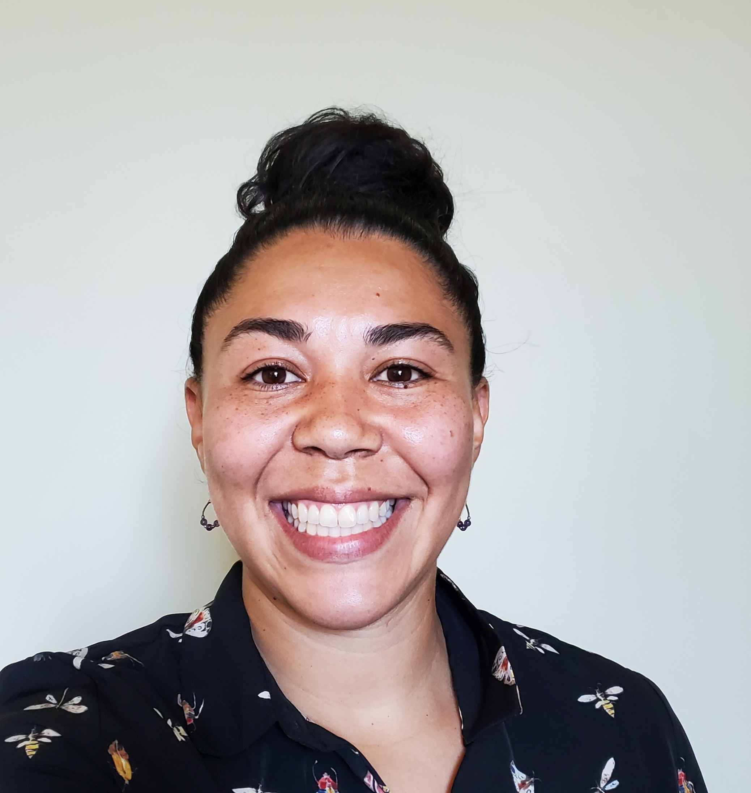
Jazlyn Mooney (she/her)
Jazlyn is a Gabilan Assistant Professor in the Quantitative and Computational Biology (QCB) Department within the Dornsife College of Letters, Arts and Sciences at USC. Her research combines computational approaches with population genetics theory to better understand genetic variation, medical genetics, and human evolution. CV
Jazlyn completed her undergraduate degree at the University of New Mexico studying human evolution with Jeffrey Long in Anthropology. She completed her PhD in Human Genetics at UCLA in 2020 under the advisement of Kirk Lohmueller, studying genetic variation in admixed populations, complex traits in dogs, and conservation genomics. Afterward, she moved to Stanford's Biology department for postdoctoral research with Noah Rosenberg, where she continued to study admixed populations with a focus on inference method development.
Postdoctoral Fellows
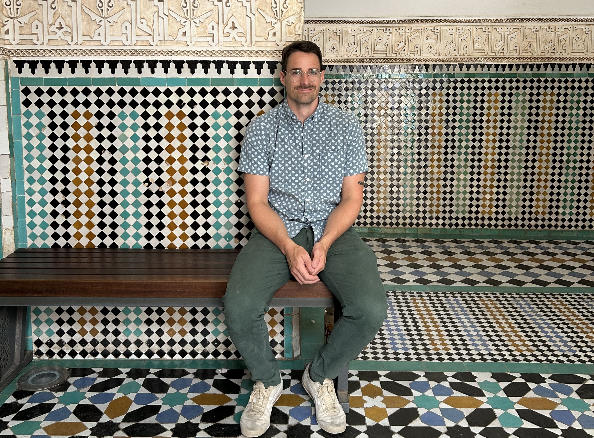
Hayden Davis (he/him)
Hayden recently completed a joint postdoctoral appointment at the University of Washington and NOAA, where he studied the genetic basis of disease resistance and life-history traits in salmonids and developed computational approaches for modeling temporal effective population size. He completed his PhD at the University of Washington, using population genetics and phylogenetic methods to investigate gene flow, species boundaries, and population structure in non-model species. Currently, he is working on inferring the demography of Channel Island foxes using ancestral recombination graphs.
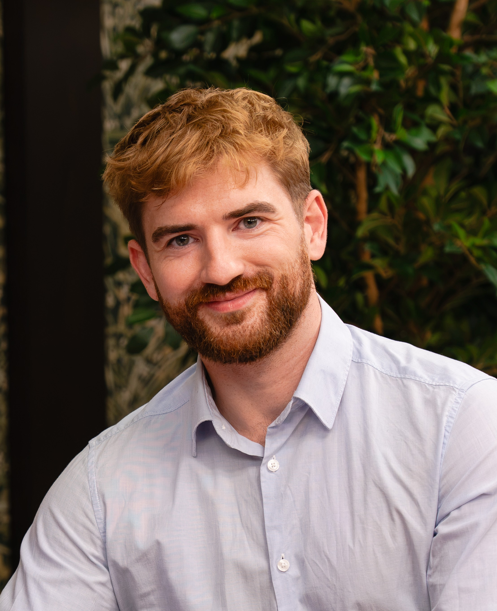
Matt Beaumont (he/him)
Matt completed his MSc in Biotechnology at Nottingham Trent University and his PhD at the Institute of Population Genetics at Veterinärmedizinische Universität Wien, where he studied transposable elements and their invasion dynamics in Drosophila. He specializes in pipeline development and bridging the gap between experimental and computational biology. Matt is interested in better understanding complex non-additive trait architecture in human genetics.
Graduate Students
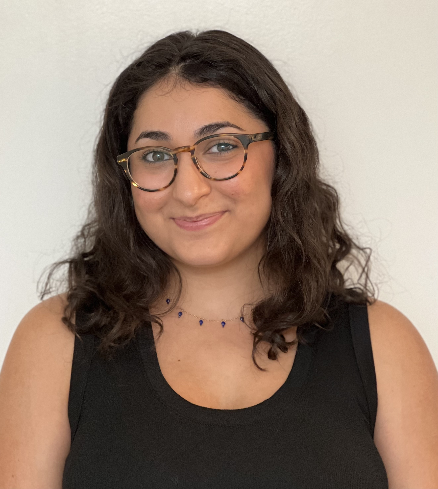
Shirin Nataneli (she/her)
Shirin is broadly interested in population genetics and evolution. Currently, she is exploring how we can better model complex admixture scenarios and infer demography using local ancestry information.
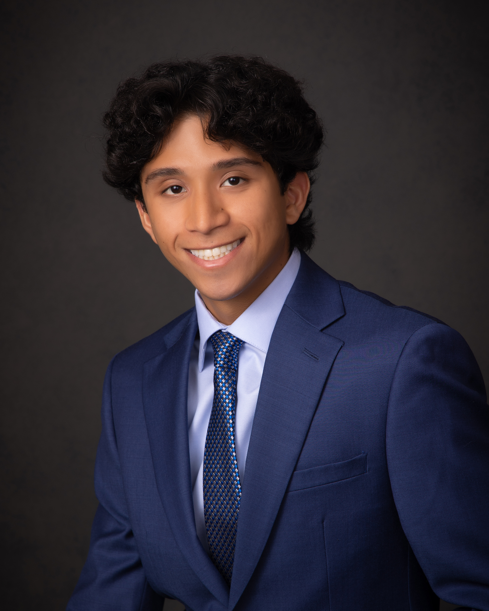
Aydin Loid Karatas (he/him)
Aydin is excited about the intersection of modeling human disease and large-scale simulation frameworks. His work addresses how admixture affects the distribution of identity-by-descent segments, and he is building a detailed demographic model of admixed populations from North America.
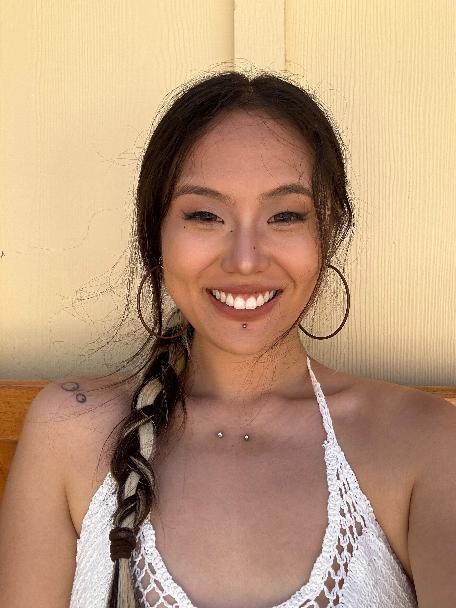
Shengmiao (Morgan) Huang (she/her)
Shengmiao is interested in developing mathematical models for conservation biology. Her work focuses on extending mathematical models to better understand the genealogical and demographic history of admixed populations.
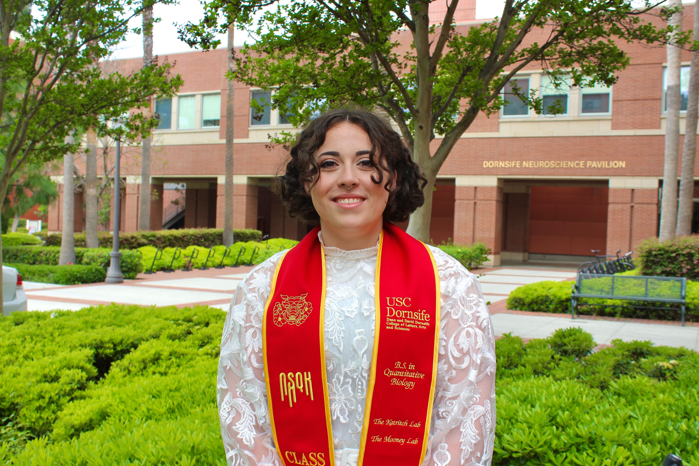
Tessa Ferrari (she/her)
Tessa graduated from the Quantitative Biology undergraduate program, had a stint as our lab Research Technician, and is now in our CBB PhD program. She is interested in building and using large-scale simulation frameworks to infer demography, and developing methods to quantify recessive mutational load while controlling for structure.
Postbac Researcher
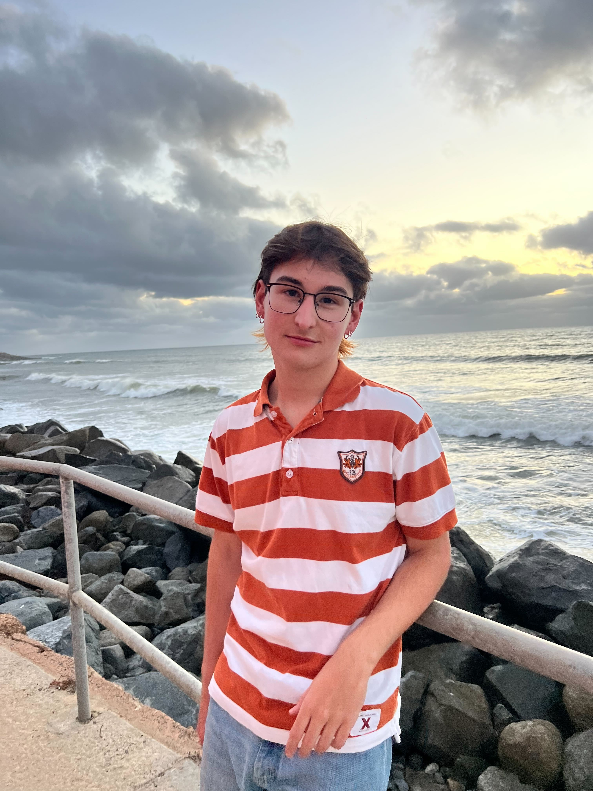
Matthew Genchev
Matthew was an undergraduate in the Quantitative Biology program with an interest in modeling recombination and demography in non-human populations. He is currently reconstructing the demographic history of Channel Island foxes. Matthew was a Provost Undergraduate Research Fellow, SURF, and URAP Fellow.
Alumni
Tina Lasisi (she/her)
Tina's background and interests fall within Biological Anthropology and complex trait genetics, specifically the evolution of human variation in pigmentation and scalp hair. Check out her website and PBS mini-series Why Am I Like This?
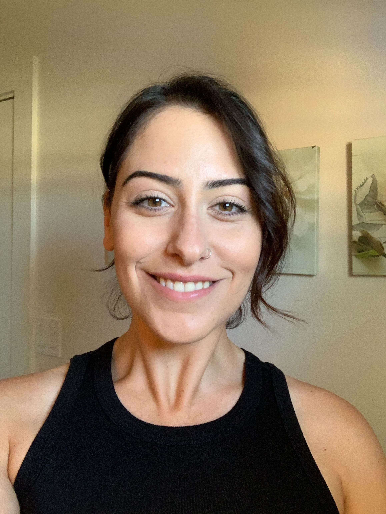
Maria Akopyan (she/her)
Maria completed her PhD at Cornell studying gene flow and adaptation in Atlantic silversides. While in our group, she explored how reference bias affects demographic inference in Canidae using whole genome sequence data from Mainland foxes. She was also an NSF PRFB postdoc in the Samuk and Armstrong labs at UCR.
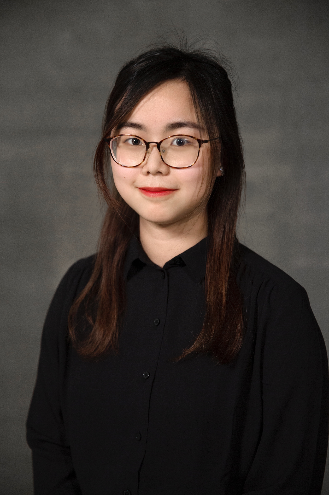
Mengdi (Kim) Chai
Mengdi graduated with honors from the Quantitative Biology program. As a WiSE Undergraduate Fellow, she used identity-by-descent segments to identify genes associated with coat color in tigers and track their ancestral origins.
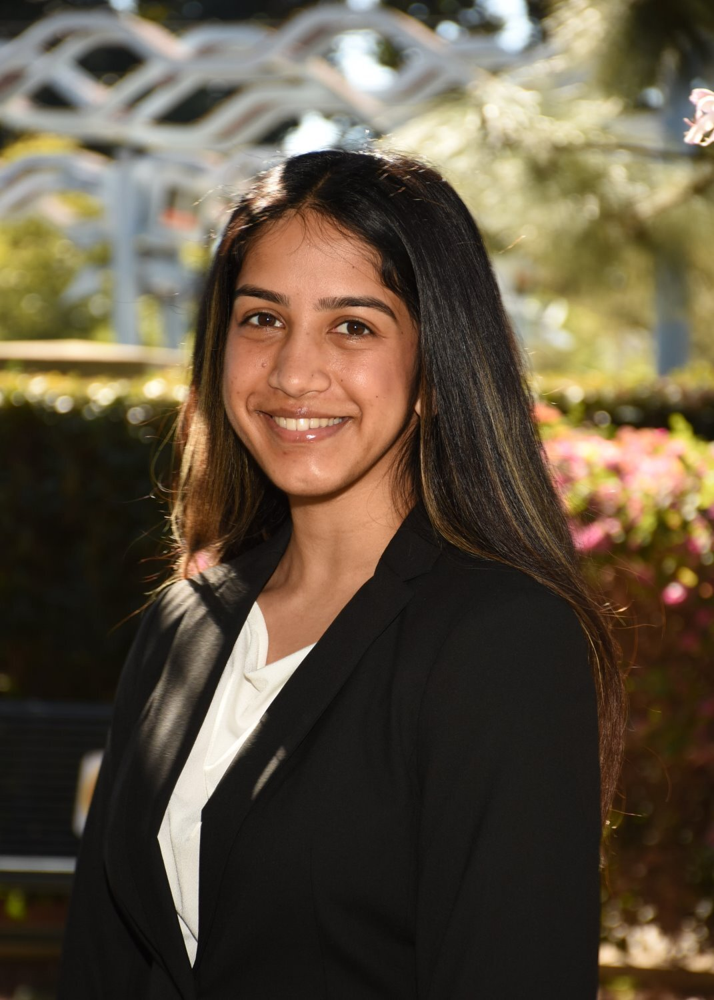
Anika Shrivastava
Anika worked on quantifying regions of the genome that harbor potential recessive lethal mutations by layering information from multiple types of genomic annotations. She was a Provost Undergraduate Research Fellow.
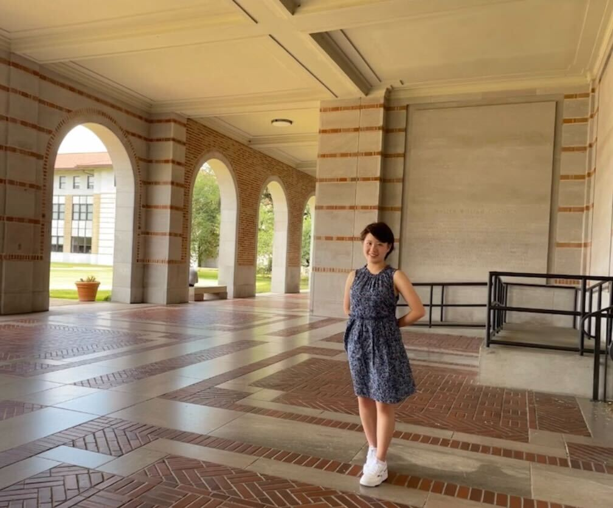
Chenyang (Julie) Li
Julie created the population assignment algorithm for mPCRselect. She was a WiSE Undergraduate Fellow, graduated with honors, and received the USC Discovery Scholar Distinction.
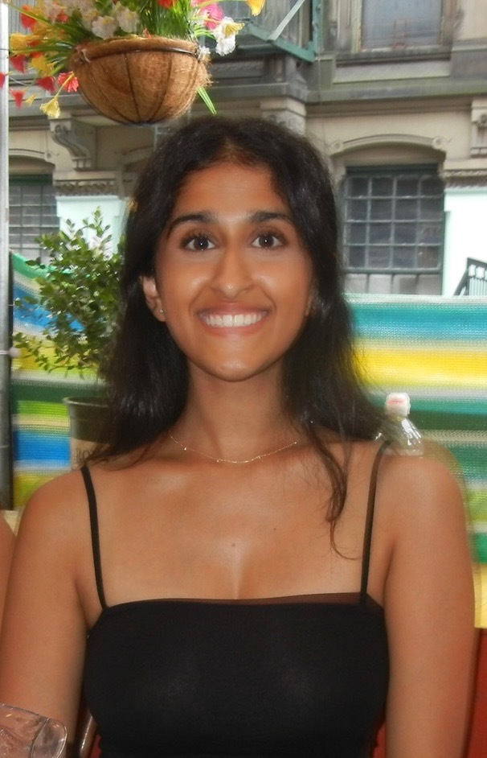
Mahija Mogalipuvvu
Mahija co-led our QBIO 490 section on Multi-Omic Data Analysis. In the lab, she worked on better understanding the allele frequency spectra of cancer-associated variants.

Peyton Hall
Peyton's project layered information from multiple types of genomic annotations to explore whether there were differences in annotation distributions across ancestries, extending our work on captive tigers.
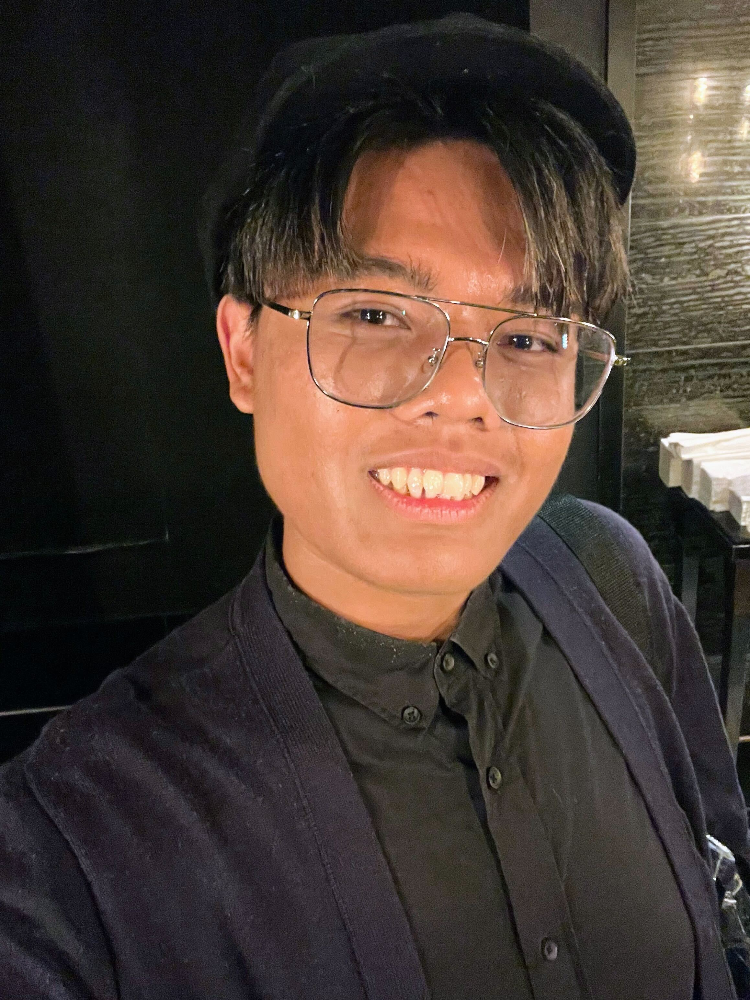
Joseph Caluya
Joseph worked on data from TCGA, seeking to understand shared and population-specific differential expression in variants associated with breast cancer.
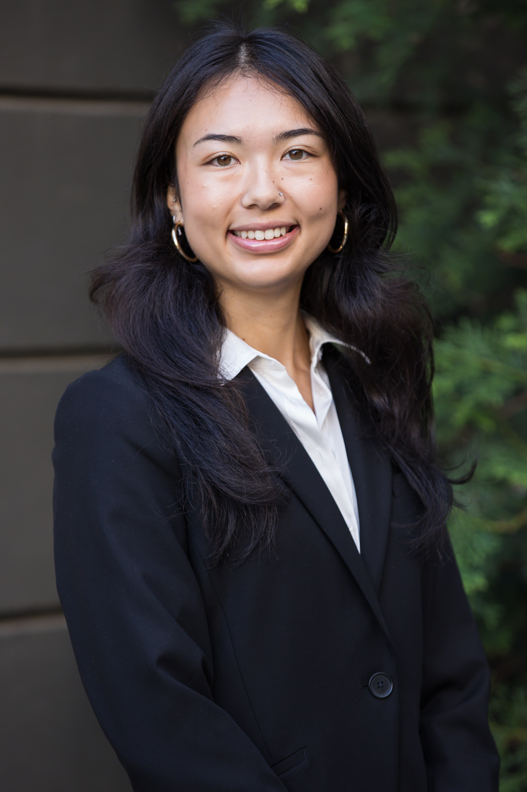
Aiko Abo Dominguez
Co-advised with Dr. Regina Wetzer at LA NHM, Aiko studied the Los Angeles population of Ligia using macroevolutionary and population genetic analyses. She was a URAP Fellow and recipient of both the NSF GRFP and a Fulbright Research Award in Argentina.
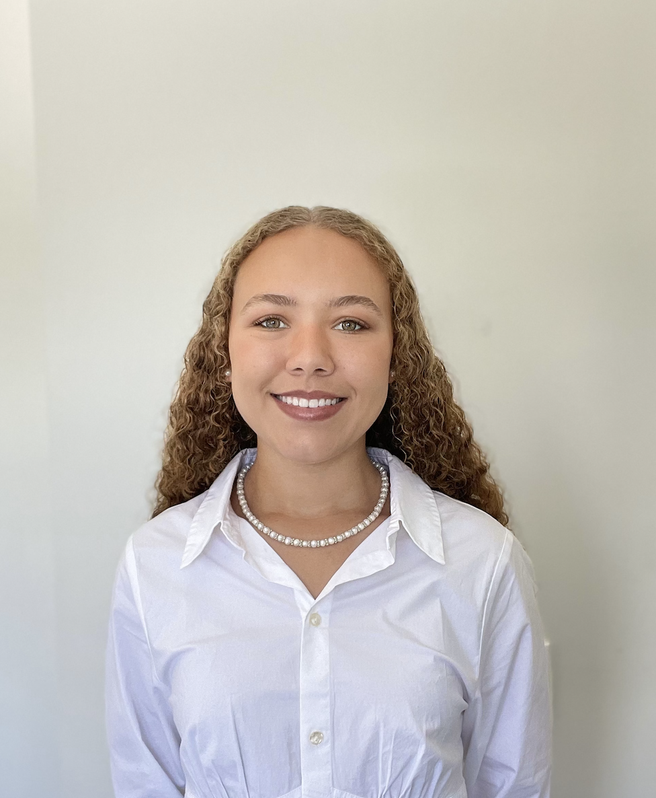

Bruk Tefera
Bruk is interested in bioinformatics, cancer genomics, and machine learning.
Classes Taught
HUMGEN 19: How Genetics has Contributed to Racial Injustice in America and the World
Fall 2020
Fiat Lux seminar co-taught with Dr. Nelson Freimer at UCLA. We used a mixture of readings, presentations, and discussions to navigate the history of Genetics and its ties to Eugenics. Syllabus
BIOL 870: Biology Colloquium
Fall 2020
Seminar-based course taught at SFSU. Students' scientific curiosity was piqued as they heard and interacted with biologists from a range of subfields. Syllabus
QBIO 105: Introduction to Quantitative Biology Seminar
Spring 2023
Seminar-based course co-taught with Dr. Remo Rohs at USC. The introductory seminar for students taking the QBIO major — ideally taken as a freshman or after transferring into the program. The instructors introduce the general field of Quantitative Biology, its definition and role within the Biological Sciences, and its relationship with Chemistry, Computer Science, Engineering, Mathematics, Medicine, and Physics. Syllabus
QBIO 475: Statistical and Evolutionary Genetics
Fall 2022, 2023, 2024, 2025, 2026
QBIO capstone course co-taught with Dr. Doc Edge at USC. An upper-division course introducing quantitative biologists to central ideas in the mathematical modeling and statistical analysis of genetic variation. Topics from evolutionary genetics and medical genetics are explored using a mix of math, simulation, and data analysis — including genetic drift, natural selection, mutation, migration, population structure, and study designs for learning about genotype-phenotype relationships. Syllabus

QBIO 115w: Ethics in Biology, Medicine, and Statistics
Spring 2024 & Spring 2025
Dornsife GE course created and taught at USC. Biology, medicine, and statistics are each deeply rooted in 19th-century eugenics. This course critically reflects on the origins of each field and explores modern research practices that offer hope for an equitable future, using a mixture of readings, presentations, and discussions. Syllabus
Outreach and Science Communication
UCLA Association for Multi-Ethnic Bioscientists Advancement (AMEBA)
Co-founder
During graduate school I co-founded AMEBA alongside Drs. Andrew Lopez, Jessica Ochoa and Christopher Robles. The goal of AMEBA is to create a community and support the academic development of underrepresented students across Biosciences. AMEBA has now grown to 40+ students spanning Life Sciences, Physical Sciences, and Graduate Programs in Biosciences.
Introduction to Tidyverse for Computational Biology
SACNAS Workshops, 2020 and 2022
Workshops covering basic statistics and plotting using Tidyverse for computational biology. Presentation (2022)
Ethics in Genetics and Genomics — Paradigm Podcast
Interviewed by former QBIO student Wade Boohar for the Paradigm Podcast (Shift SC, USC). We explored ethical considerations when dealing with population genetics and large-scale genomic studies.
Genetics, Ethics, and the Responsibility of Science
What are the origins of genetics and what are the ethical considerations of large-scale genomic studies?
Elephant in the Room — Natural History Museum of Los Angeles
Panel discussion for NHM's public series exploring bold and sometimes controversial topics. Our panel explored both established facts and emerging mysteries about dire wolves, addressing misconceptions and exciting developments in biotechnology, sequencing, and de-extinction.
Dire Wolves: Still Extinct?
What do we know about dire wolves? Are they still extinct?
Lab in the News
Reference genome choice compromises population genetic analyses
News about our work on using non-species-matched reference genomes, led by former postdoc Dr. Maria Akopyan.
Unraveling the genomic diversity and admixture history of captive tigers in the United States
News about our work on tigers with Dr. Ellie Armstrong.
- DNA Reveals the Origin Stories of America's Captive Tigers — New York Times
- The genetic secrets of the United States's privately owned tigers — Science
- How captive tigers can help the wild ones: Q&A with USC's Jazlyn Mooney
On the number of genealogical ancestors tracing to the source groups of an admixed population
News about our work on uncovering lost ancestors of African Americans.
- Mathematical model calculates probability of shared ancestors for African Americans — Stanford H&S
- Study sheds light on Black Americans' ancestral links — Axios
- A new approach to genetic genealogy sheds light on African American ancestry — Stanford News
- New study offers African American genealogical information unrecoverable from written record
- Researchers illuminate centuries of identity lost because of slavery — USC Today
- Breaking down the 'brick wall' of African American genealogy — Daily Trojan